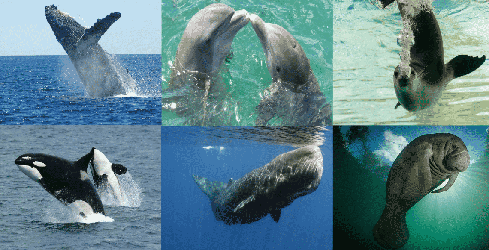
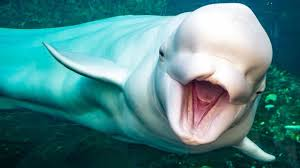
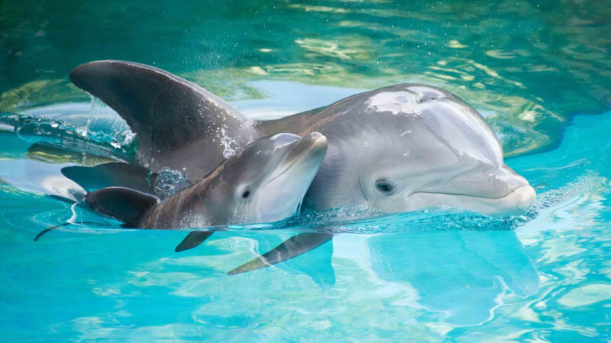

Todos los seres vivos del planeta tienen su origen en el medio acuático. A lo largo de la historia evolutiva, los mamíferos han ido cambiando y adaptándose a las condiciones sobre la superficie de la tierra hasta que, hace varios millones de años, algunos volvieron a sumergirse en los océanos y ríos, amoldándose a la vida bajo estas condiciones.
¿Qué es lo primero que piensas cuando oyes mamíferos acuáticos?, ¿Un delfín?, ¿Una ballena? ¿Una foca?, ¿O acasos eres acaso de los más extremos y piensas en un elefante con salvavidas? Lo cierto es que existen aproximadamente 130 especies de mamíferos marinos conocidos y estos están agrupados en cetáceos, sirenios, pinnípedos y nutrias. Los hay de todos los tamaños desde una pequeña nutria de 57cm hasta una gigantesca ballena azul de 25m. Acompañame en este recorrido de los mamíferos acuáticos
 Los delfines son mamíferos marinos que, junto con el cachalote, la marsopa y las ballenas, forman parte de la familia de los cetáceos, y se ubican más específicamente dentro del orden de los odontocetos (animales marinos con dientes).
Populares por su gran inteligencia, estos animales, de nombre científico Delphinidae, se clasifican además en 34 subespecies, entre las cuales destaca el delfín común, el delfín manchado tropical y el delfín listado. como delfines de río. Gracias a una corteza cerebral impresionantemente desarrollada con respecto al resto de los animales mamíferos, el delfín posee una memoria prodigiosa. Tal es su desarrollo, que muchos biólogos y científicos consideran que se trata del segundo animal más inteligente del planeta.
Los delfines son animales muy sociales, y como tal, necesitan contar con un sistema de comunicación bien desarrollado que le permita coordinar las actividades del grupo y ayudarse mutuamente en caso de peligro. Incluso, algunos especialistas afirman que estos animales poseen un vocabulario sorprendente basado en un sistema de sonidos varios, y hasta en la posición que adoptan con su cuerpo. Con respecto a los sonidos, es preciso anotar que estos animales poseen un sistema de bolsas de aire (cerca del espiráculo en su cabeza) que les permite emitir desde ráfagas y silbidos hasta los típicos clics o impulsos sonoros.
Los pinnípedos (Pinnipedia) son una superfamilia de mamíferos carnívoros del suborden Caniformia; junto con los cetáceos, y los sirenios, los únicos mamíferos adaptados a la vida acuática marina. Son de cuerpo alargado y husiforme, patas cortas con extremidades palmeadas en forma de aleta. Suelen ser gregarios, se alimentan de peces, moluscos y crustáceos.
Los pinnípedos conforman un grupo de carnívoros altamente especializados. Su característica distintiva es la modificación de sus extremidades en aletas para permitir la locomoción en el medio marino donde se alimentan; sin embargo, aún dependen del ambiente terrestre para reproducirse y descansar. Esta dualidad los hace animales únicos por las adaptaciones conductuales y fisiológicas que presentan. Los más conocidos son:
Los mamíferos acuáticos necesitan aire para respirar. Por ello, toman grandes cantidades de aire y lo mantienen dentro de sus pulmones durante largos periodos de tiempo. Cuando se sumergen después de haber tomado aire, son capaces de redirigir la sangre hacia el cerebro, corazón y músculo esquelético. Sus músculos poseen una gran concentración de una proteína llamada mioglobina, capaz de acumular grandes cantidades de oxígeno.
De esta forma, los animales acuáticos son capaces de permanecer periodos de tiempo considerables sin tomar aire. Las crías jóvenes y recién nacidas no tienen desarrollada esta capacidad, por lo que necesitarán tomar aire más veces que el resto del grupo.
Algunos de ellos como los delfines, las ballenas y las orcas poseen un orificio en la parte superior de su cuerpo llamado espiráculo. El espiráculo se conecta directamente con los pulmones y les permite estar un mayor tiempo debajo del agua.